Designing a travel planning app
Meet Surbhi
Surbhi is a product manager planning her first international trip, travelling solo. She has places she wants to explore, but turning those ideas into a workable trip means figuring out visas, choosing cities, arranging stays and transport, and deciding what to do each day.
Her planning happens across Instagram saves, recommendations from friends, ChatGPT conversations and booking websites. Each helps with a part of the trip, but she still has to bring the information together and keep track of what’s decided.
For a first-time international traveller, the challenge is knowing how those decisions fit together—and what needs attention next.
The design challenge
How might we help Surbhi turn scattered travel ideas and bookings into one clear plan, with relevant guidance to make decisions along the way?
How does travel planning usually happen
Decide where you want to go
Generally happens while scrolling Instagram, through recommendations from friends, or from ChatGPT.
Figure out visa
Figure out the process, collect documents, book appointments.
Decide where you want to go (exactly)
Considering an international trip, one might have fixated on the country.
Find things to do in those places
Some iconic places would be remembered, but a lot of it gets lost in Instagram saves.
Book stay and commute
Usually booked from different websites; documents get lost in emails, screenshots, and DMs.
Book tour tickets
Why is it so tough, man?
- Visa process is usually tedious.
- Your bookings for stays, commute, or experiences get lost in emails and screenshots.
- Recommendations or bucket list items sometimes get lost in Instagram saves or in your memory.
What I used it for
A while ago, I went to Europe for the first time. ChatGPT turned out to be a saviour.
- Trip planning & logistics: Understanding visa requirements, building itineraries, coordinating transportation and planning around existing bookings.
- Discovery & recommendations: Finding attractions, local experiences, food and shopping options based on my preferences, location and budget.
- Decision-making & validation: Comparing alternatives, assessing itinerary feasibility and making informed booking decisions.
- On-trip assistance & replanning: Navigating unexpected weather conditions, safety concerns, last-minute changes and time-sensitive situations.
Here are some of the things I had asked at that time.

Good thing about ChatGPT
It is highly contextual, so I can find answers to very, very specific questions.
But,
This is where the experience falls short:
- Fragmented information: Useful recommendations were scattered across conversations.
- Lack of persistent itinerary: Answers didn’t automatically become part of a structured travel plan.
- Manual context sharing: You had to communicate your bookings, location and constraints.
- Reactive assistance: You had to know what questions to ask.
- No visual understanding of the trip: Spatial relationships, schedules and alternatives were largely communicated through text.
Problems to solve:
Information gets scattered
- Recommendations get lost in Instagram saves and screenshots.
- Bookings are scattered—in emails, file managers and different travel apps.
- Answers to your specific questions get lost in ChatGPT history.
Reactive assistance
I remember asking ChatGPT what’s the best time to visit the Eiffel Tower. It said sunset, which was supposed to be at 9 PM. I never could have guessed. A good travel app shouldn’t need me to ask this.
Solution
- Streamlined visualisation of the whole trip to easily find all kinds of information.
- Assistance — provide detailed, relevant information about decision-making factors.
User flow
- Select cities
- Select dates
- Select duration for each city
- Add basic things to your itinerary
- Create trip
This gives the traveller a basic outline of their trip. From here, the app should help them flesh out the details.
This is what it would look like
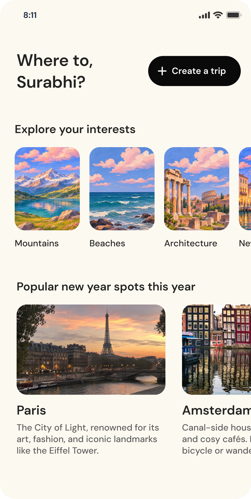
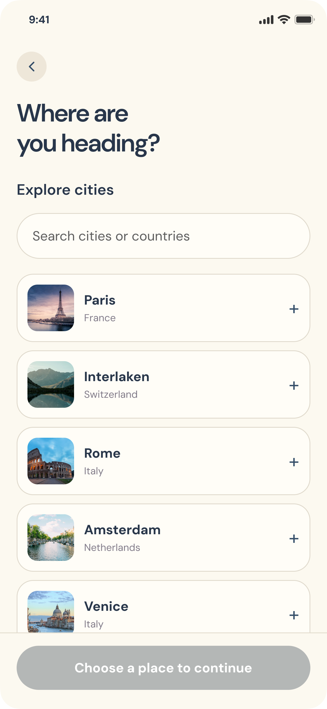
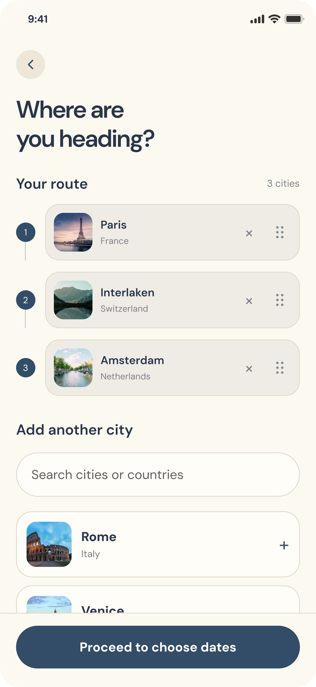
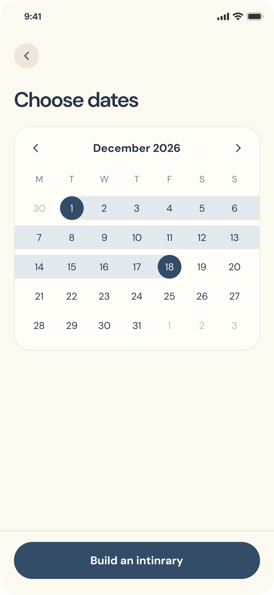
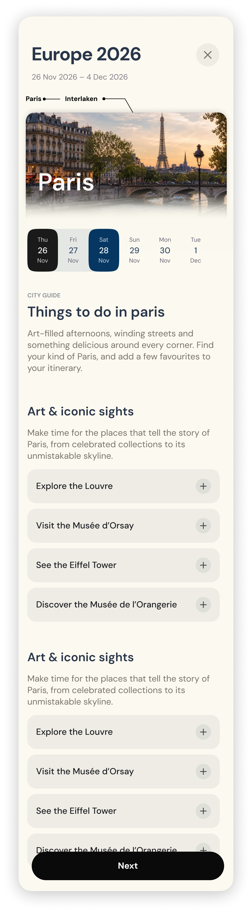
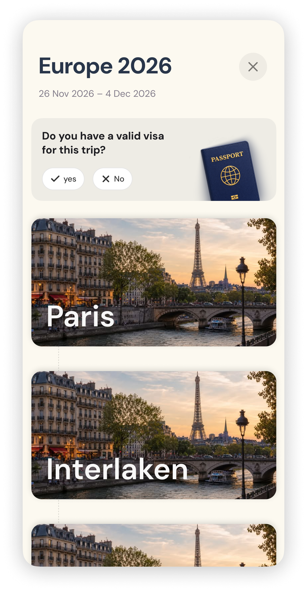
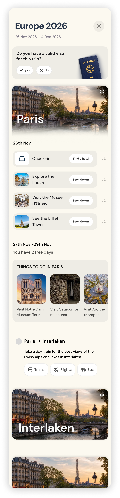
For each city
The traveller selects how long they want to stay in each city.
A city overview helps them build a basic itinerary, with recommendations they can add to the plan.
When trip is created
This page becomes a place for getting recommendations and reviewing the trip.
Each city can be expanded to see the itinerary, booking actions and suggestions for free days.
But, how does all the information get streamlined?
So when you’re about to board your train
This is what it would look like
How do we provide assistance throughout the journey
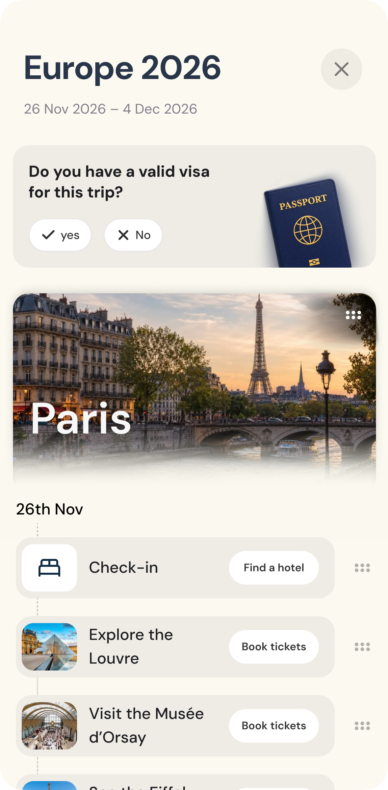
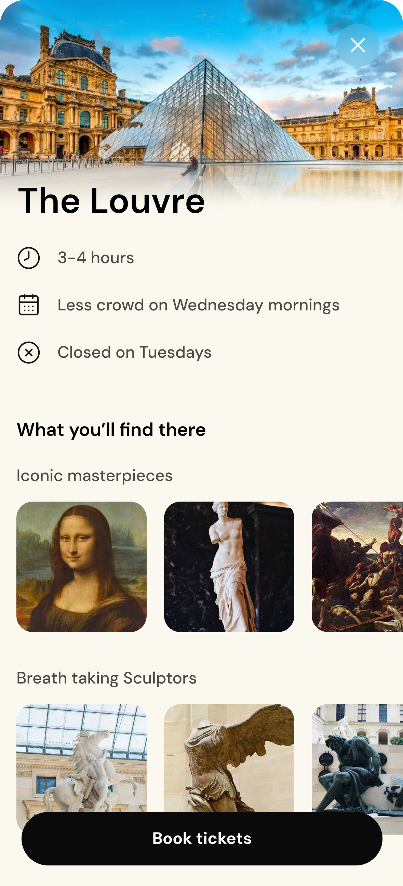
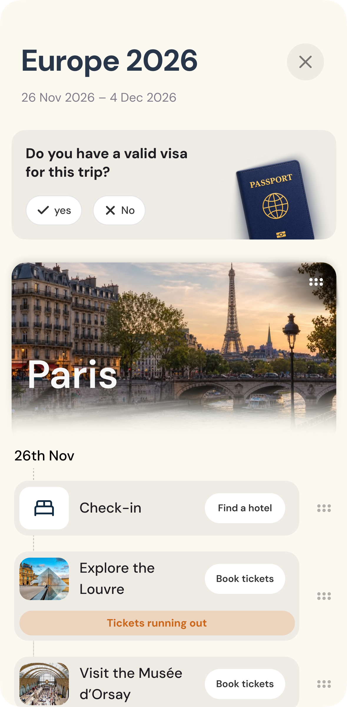
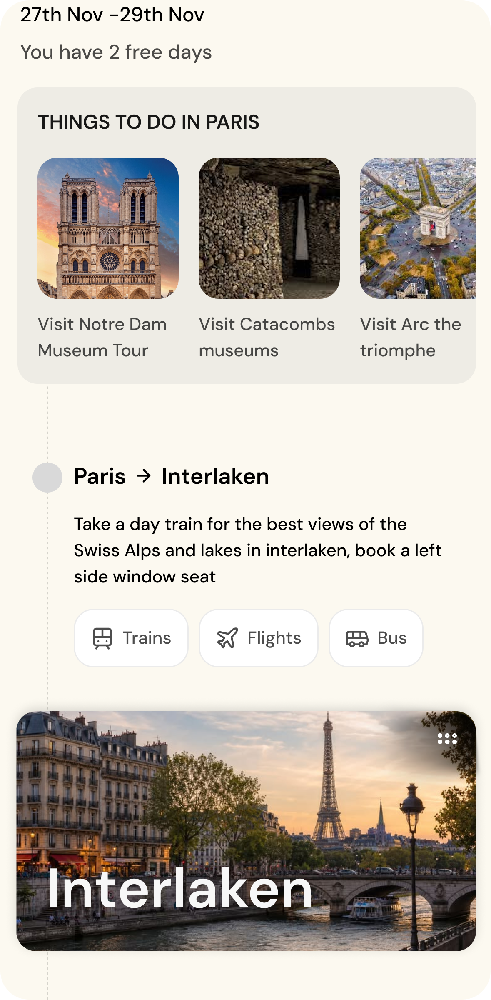
Information that could affect a decision
What each experience offers
Inform in time when they need to take urgent action
Suggest mode of travel
Try the experience
The working prototype takes the traveller from choosing destinations and dates to planning each city and reviewing the trip. Activities selected during city planning appear in the route overview.
Open the interactive prototype
Start with Create a trip, choose cities and dates, then plan each stop. This is a demo with browser-local saving; booking actions and visa assistance shown in the Figma explorations are not live integrations.